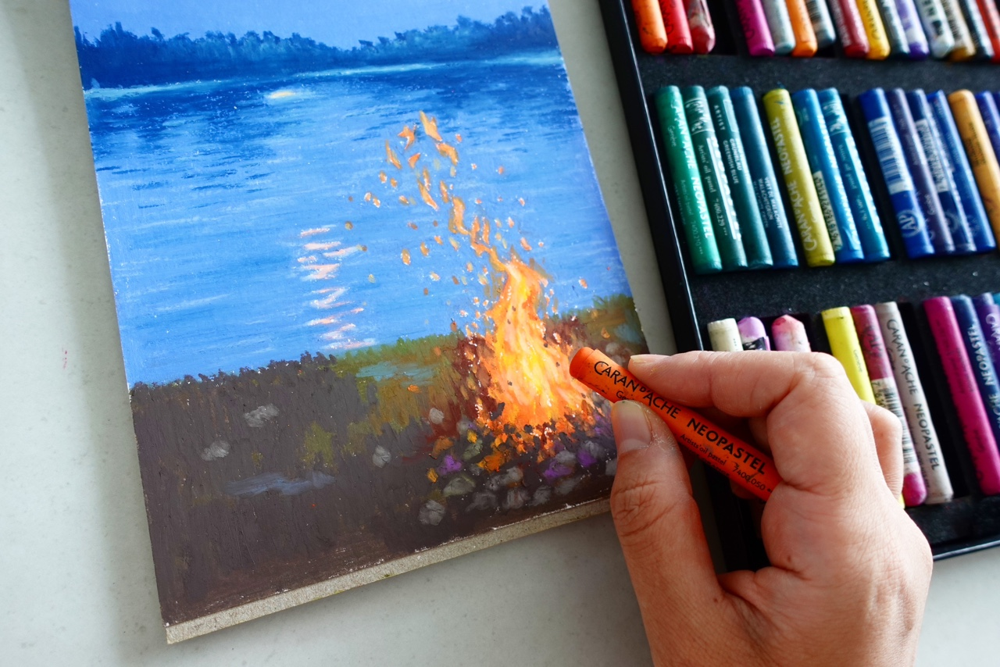
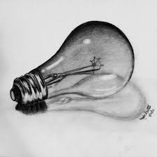
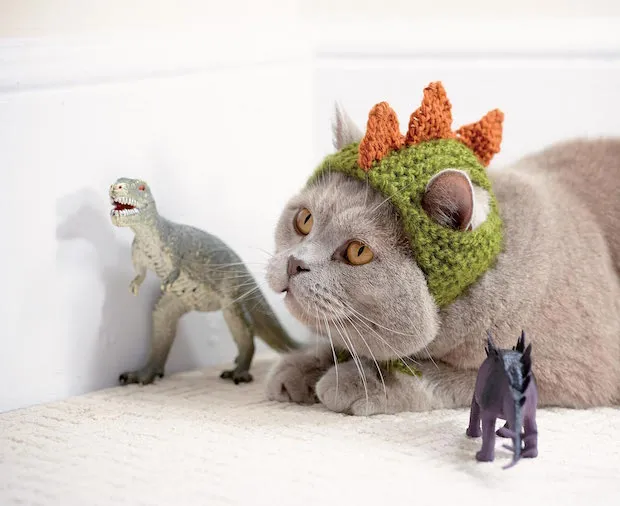

What is human-made art?
Let's learn how visual art is made by hand!
Select any color of your choosing from the paint palette and drag it across the screen using your mouse. Start by drawing a flower. First draw a circle in the middle of the sceen and then five semi-circles around it. Next draw line going from the edge of the circle towards the bottom of the screen. Then add two curved lines to either side of the bottom of the straight line. Click the spacebar to reset the sketch to begin painting something new. Now, draw a new flower anyway you want or feel.
Using a paint brush, hold it up to the screen and start painting. Paint by moving the brush around. As you move the brush around, the strokes will show up on the canvas.
There is also pastels, watercolor, charcoal, sewing, knitting, just to name a few.